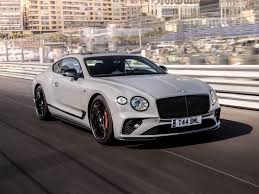
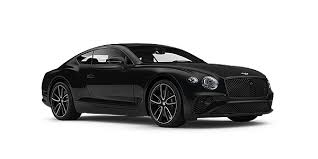
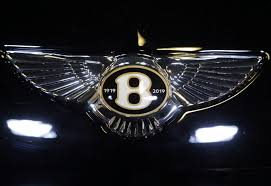

Bentley Motors Limited is a British designer, manufacturer and marketer of luxury cars and SUVs. Headquartered in Crewe, England, the company was founded by W. O. Bentley (1888–1971) in 1919 in Cricklewood, North London, and became widely known for winning the 24 Hours of Le Mans in 1924, 1927, 1928, 1929 and 1930. Bentley has been a subsidiary of the Volkswagen Group since 1998 and consolidated under VW's premium brand arm Audi since 2022.[15][16]
Prominent models extend from the historic sports-racing Bentley 4½ Litre and Bentley Speed Six; the more recent Bentley R Type Continental, Bentley Turbo R, and Bentley Arnage; to its current model line, including the Flying Spur, Continental GT, Bentayga and the Mulsanne—which are marketed worldwide, with China as its largest market as of November 2012.[17]
Today most Bentley models are assembled at the company's Crewe factory, with a small number assembled at Volkswagen's Dresden factory, Germany,[18] and with bodies for the Continental manufactured in Zwickau and for the Bentayga manufactured at the Volkswagen Bratislava Plant.
The joining and eventual separation of Bentley and Rolls-Royce followed a series of mergers and acquisitions, beginning with the 1931 purchase by Rolls-Royce of Bentley, then in receivership. In 1971, Rolls-Royce itself was forced into receivership and the UK government nationalised the company—splitting it into an aerospace company (Rolls-Royce Plc) and an automotive company (Rolls-Royce Motors Limited, including Bentley). Rolls-Royce Motors was subsequently sold to engineering conglomerate Vickers, and in 1998 Vickers sold Rolls-Royce to Volkswagen AG, including Bentley with its name and logos (but not the name "Rolls Royce").
History
Cricklewood (1919–1931)
Before World War I, Walter Owen Bentley and his brother, Horace Millner Bentley, sold French DFP cars in Cricklewood, North London, but W.O, as Walter was known, always wanted to design and build his own cars. At the DFP factory, in 1913, he noticed an aluminium paperweight and thought that aluminium might be a suitable replacement for cast iron to fabricate lighter pistons. The first Bentley aluminium pistons were fitted to Sopwith Camel aero engines during the First World War.
The same day that the Paris Peace Conference to end World War I started, Walter Owen ("W.O.") Bentley founded Bentley Motors Limited, on 18 January 1919[19] and registered Bentley Motors Ltd. in August 1919. In October he exhibited a car chassis (with a dummy engine) at the London Motor Show.[20] Ex–Royal Flying Corps officer Clive Gallop designed an innovative four-valves-per-cylinder engine for the chassis. By December the engine was built and running. Delivery of the first cars was scheduled for June 1920, but development took longer than estimated so the date was extended to September 1921.[20] The durability of the first Bentley cars earned widespread acclaim, and they competed in hill climbs and raced at Brooklands.[21]
Bentley's first major event was the 1922 Indianapolis 500, a race dominated by specialized cars with Duesenberg racing chassis. They entered a modified road car driven by works driver Douglas Hawkes, accompanied by riding mechanic H. S. "Bertie" Browning.[22] Hawkes completed the full 500 miles (800 km) and finished 13th with an average speed of 74.95 miles per hour (120.62 km/h) after starting in 19th position.[23] The team was then rushed back to England to compete in the 1922 RAC Tourist Trophy.


